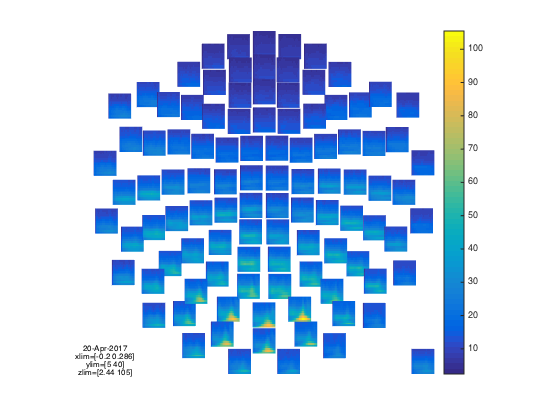
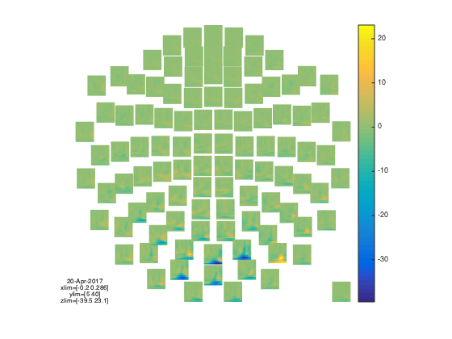
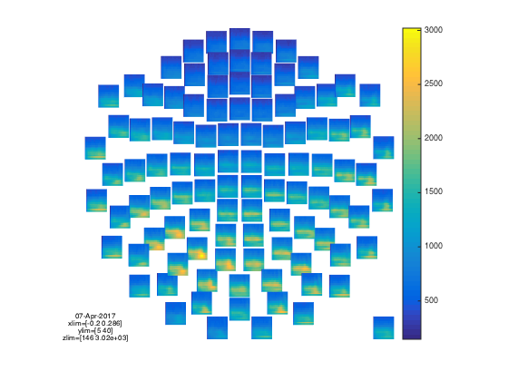
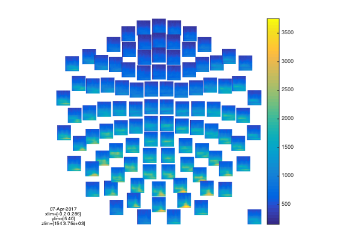
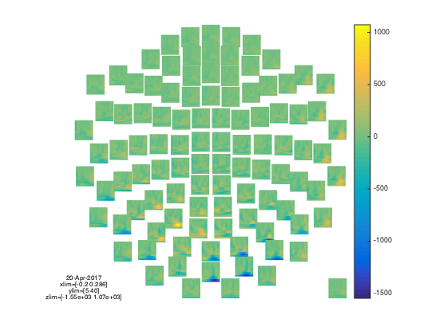
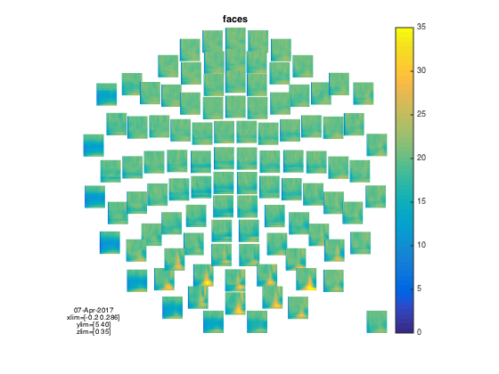

Sensorspace ERF Analysis with OAT
In this practical we will work with a single subject's data from an emotional faces task (data courtesy of Susie Murphy) and perform an Time-Frequency analysis in sensor space.
You will need the following files from the example_data directory:
- Asss_fif_spm12_meg25.mat - an SPM MEEG object that has continuous data that has already been SSS Maxfiltered and downsampled to 250 Hz.
- eAsss_fif_spm12_meg25.mat - an SPM MEEG object that has the same data epoched into the different task conditions.
Contents
SETUP THE MATLAB PATHS
make sure that fieldtrip and spm are not in your matlab path
setenv('OSLDIR','/Users/andrew/Software/Matlab/osl2.1/') addpath(genpath(getenv('OSLDIR'))); osl_startup(osldir);
INITIALISE GLOBAL SETTINGS FOR THIS ANALYSIS
This cell sets the directory that OAT will work in. Change the workingdir variable to correspond to the correct directory on your computer before running the cell.
% directory where the data is: workingdir='/Users/andrew/Projects/OSL2_testdir/meg_workshop/drugface/data/'; % directory where the data is cmd = ['mkdir ' workingdir]; if ~exist(workingdir, 'dir'), unix(cmd); end % make dir to put the results in clear spm_files_continuous spm_files_epoched;
SET UP THE SUBJECTS FOR THE ANALYSIS
Specify a list of the fif files, structural files (not applicable for this practical) and SPM files (which will be created). It is important to make sure that the order of these lists is consistent across sessions. Note that here we only have 1 subject, but more generally there would be more than one. For example:
fif_files{1}=[testdir '/fifs/sub1_face_sss.fif']; fif_files{2}=[testdir '/fifs/sub2_face_sss.fif']; etc... spm_files{1} = [workingdir '/sub1_face_sss.mat']; spm_files{2} = [workingdir '/sub2_face_sss.mat']; etc...
spm_files_continuous{1}=[workingdir '/Asss_fif_spm12_meg25.mat'];
spm_files_epoched{1}=[workingdir '/eAsss_fif_spm12_meg25.mat'];
SETUP SENSOR SPACE SOURCE RECON
This stage sets up the source reconstruction stage of an OAT analysis. The source_recon stage is always run even for a sensorspace analysis, though in these cases it simply prepares the data for subsequent analysis. In this example we define our input files (D_continuous and D_epoched) and conditions before setting a time frequency window from -200ms before stimulus onset to +400ms and 4 to 100Hz. The source recon method is set to 'none' as we are performing a sensorspace analysis The oat.source_recon.dirname is where all the analysis will be stored. This includes all the intermediate steps, diagnostic plots and final results. Make sure this directory does not contain any other analyses that might be overwritten.
oat=[]; oat.source_recon.D_epoched=spm_files_epoched; % this is passed in so that the bad trials and bad channels can be read out oat.source_recon.D_continuous=spm_files_continuous; oat.source_recon.conditions={'Motorbike','Neutral face','Happy face','Fearful face'}; oat.source_recon.freq_range=[4 100]; % frequency range in Hz oat.source_recon.time_range=[-0.2 0.4]; oat.source_recon.method='none'; oat.source_recon.normalise_method='none'; % Set this to something specific oat.source_recon.dirname = '/Users/andrew/Projects/OSL2_testdir/meg_workshop/drugface/sensorspace_tf';
SETUP THE TIME-FREQUENCY DECOMPOSITION
Next we set up a single subject trial-wise GLM on our prepared data. Firstly the time-frequency parameters are defined, these must be within the bounds of the time-frequency window set in the source recon stage.
Note the following settings in particular:
- oat.first_level.tf_method - This indicates we are doing a TF analysis using hilbert or morlet transform (or is set to 'none' if doing a time-domain ERF analysis)
- oat.first_level.tf_freq_range - This indicates the overall freq range.
- oat.first_level.tf_num_freqs - This indicates the number of freq bins to use within the overall freq range
- oat.first_level.tf_hilbert_freq_res - This indicates the bandwidth of the freq bins, if doing a hilbert transform
- oat.first_level.time_range - This indicates the time range. NOTE that this needs to be smaller than oat.source_recon.time_range to remove edge effects
We have also set the baseline correction to be turned off for the third contrast, [-3 1 1 1] (this is often a good idea for differential contrasts, for which we do not need to do baseline correction):
- oat.first_level.bc=[1 1 0]
oat.first_level.tf_method='morlet'; % can be morlet or hilbert oat.first_level.tf_freq_range=[5 40]; % frequency range in Hz oat.first_level.time_range=[-0.2 0.3]; % need to make this time range smallet than oat.source_recon.time_range to remove edge effects oat.first_level.tf_num_freqs=14; % we are keeping this unusally low in the practical for the sake of speed %oat.first_level.tf_hilbert_freq_res=8; % NOTE that you can also set HILBERT freq ranges explicitly, e.g.: % oat.first_level.tf_hilbert_freq_ranges=[[4 8];[8 12];[12 16];[16 20];[20 24];[24 30]]; % frequency range in Hz oat.first_level.post_tf_downsample_factor=4; % does downsampling after the TF decomposition oat.first_level.bc=[1 1 0]; % specifies whether or not baseline correction is done for the different contrasts
SETUP THE FIRST LEVEL GLM
This cell defines the GLM parameters for the first level analysis. Critically this includes the design matrix (in Xsummary) and contrast matrix Xsummary is a parsimonious description of the design matrix. It contains values Xsummary{reg,cond}, where reg is a regressor index number and cond is a condition index number. This will be used (by expanding the conditions over trials) to croat_settingse the (num_regressors x num_trials) design matrix: Each contrast is a vector containing a weight per condition defining how the condition parameter estimates are to be compared. Each vector will produce a different t-map across the sensors. Contrasts 1 and 2 describe positive correlations between each sensors activity and the presence of a motorbike or face stimulus respectively. Contrast 3 tests whether each sensors activity is larger for faces than motorbikes.
Xsummary={};
Xsummary{1}=[1 0 0 0];Xsummary{2}=[0 1 0 0];Xsummary{3}=[0 0 1 0];Xsummary{4}=[0 0 0 1];
oat.first_level.design_matrix_summary=Xsummary;
% contrasts to be calculated:
oat.first_level.contrast={};
oat.first_level.contrast{1}=[3 0 0 0]'; % motorbikes
oat.first_level.contrast{2}=[0 1 1 1]'; % faces
oat.first_level.contrast{3}=[-3 1 1 1]'; % faces-motorbikes
oat.first_level.contrast_name{1}='motorbikes';
oat.first_level.contrast_name{2}='faces';
oat.first_level.contrast_name{3}='faces-motorbikes';
oat.first_level.cope_type='cope';
oat.first_level.report.first_level_cons_to_do=[2 1 3];
oat.first_level.bc=[0 0 0];
RUN OAT
We are only running the source-recon and first level
oat = osl_check_oat(oat); oat.to_do=[1 1 0 0]; oat = osl_run_oat(oat);
Detected Elekta Neuromag 306 data. Using default Elekta Neuromag 306 settings.
Warning: oat.source_recon.modalities not set, or not set properly. Will set to
default:MEGPLANARMEGMAG
oat.source_recon.D_epoched set. OAT will do an epoched data trial-wise GLM
Detected Elekta Neuromag 306 data. Using default Elekta Neuromag 306 settings.
Warning: oat.source_recon.modalities not set, or not set properly. Will set to
default:MEGPLANARMEGMAG
oat.source_recon.D_epoched set. OAT will do an epoched data trial-wise GLM
oat =
to_do: [1 1 0 0]
do_plots: 0
source_recon: [1x1 struct]
first_level: [1x1 struct]
subject_level: [1x1 struct]
group_level: [1x1 struct]
osl2_version: 'c6c1aa6'
results: [1x1 struct]
*************************************************************
Running source_recon
*************************************************************
%%%%%%%%%%%%%%%%%%%%%%%%%%%%%%%%%%%%%%%%%%%%%%%%%%%%%%%%%%%%%%%%%%%%%%%%%%%%%%%%%%%%%%%%%%%%%%
%%%%%%%%%%%%%%%%%%%%%%% RUNNING OAT SOURCE RECON (SENSOR SPACE SETUP) ON SESS = 1 %%%%%%%%%%%%%%%%%%%%%%%
Using continuous data as input
Using epoched data as input
Preparing source recon stage for /Users/andrew/Projects/OSL2_testdir/meg_workshop/drugface/data//Asss_fif_spm12_meg25.mat
Will be designated session1
SPM12: spm_eeg_copy (v5079) 14:08:28 - 07/04/2017
========================================================================
SPM12: spm_eeg_copy (v5079) 14:08:30 - 07/04/2017
========================================================================
Temporal filtering...
SPM12: spm_eeg_filter (v5876) 14:08:35 - 07/04/2017
========================================================================
Epoching...
Doing no within-trial baseline correction at the point of epoching
SPM12: spm_eeg_epochs (v6183) 14:08:45 - 07/04/2017
========================================================================
Data type is missing or incorrect, assigning default.
Changing the number of channels, so discarding online montages.
source_recon_report =
dir: '/Users/andrew/Projects/OSL2_testdir/meg_workshop/drugfac...'
title: 'Source recon (epoched) - sensor space data setup'
plot_fname: []
index: 0
plot_names: {}
sub_reports: {[1x1 struct]}
Saving beamformer results: session1_recon
*************************************************************
Running first_level
*************************************************************
%%%%%%%%%%%%%%%%%%%%%%%%%%%%%%%%%%%%%%%%%%%%%%%%%%%%%%%%%%%%%%%%%%%%%%%%%%%%%%%%%%%%%%%%%%%%%%
%%%%%%%%%%%%%%%%%%%%%%% RUNNING OAT FIRST LEVEL ON SESS = 1 %%%%%%%%%%%%%%%%%%%%%%%
ans =
/Users/andrew/Projects/OSL2_testdir/meg_workshop/drugface/sensorspace_tf.oat/concatefsession1_spm_meeg.mat
SPM12: spm_eeg_copy (v5079) 14:09:09 - 07/04/2017
========================================================================
ans =
/Users/andrew/Projects/OSL2_testdir/meg_workshop/drugface/sensorspace_tf.oat/concatefsession1_spm_meeg_firstlevel.mat
Working in sensor space
Creating Morlet basis set. If you are seeing message many times, you may wish to pass a morelt basis set to 'osl_tf_transform'
USING MORLET TF
Freqs: 5 7.69231 10.3846 13.0769 15.7692 18.4615 21.1538 23.8462 26.5385 29.2308 31.9231 34.6154 37.3077 40
Reconstruct time courses and computing stats for dataset session1_recon
CAREFUL: are you sure you want no first_level.do_glm_demean flag on with no constant regressors in the design matrix!!!!?
State 1 is active for 213.6secs
First level COPEs outputted will have dimension Nvoxels x Ntpts x Ncontrasts x Nfreqs:
306 31 3 14
Doing T-F transform in sensor space on [3.65384615384615 6.34615384615385] Hz...
size(sens_data_tf)=[325 38 356 1], (nsens x ntpts x ntri x nfreq)
Doing Morlet transform... [-----------------------------------------------\]
- estimated time to finish is 0 seconds
Doing T-F transform in sensor space on [6.34615384615385 9.03846153846154] Hz...
size(sens_data_tf)=[325 38 356 1], (nsens x ntpts x ntri x nfreq)
Doing Morlet transform... [------------------------------------------------]
- estimated time to finish is 0 seconds
Doing T-F transform in sensor space on [9.03846153846154 11.7307692307692] Hz...
size(sens_data_tf)=[325 38 356 1], (nsens x ntpts x ntri x nfreq)
Doing Morlet transform... [-----------------------------------------------|]
- estimated time to finish is 0 seconds
Doing T-F transform in sensor space on [11.7307692307692 14.4230769230769] Hz...
size(sens_data_tf)=[325 38 356 1], (nsens x ntpts x ntri x nfreq)
Doing Morlet transform... [-----------------------------------------------\]
- estimated time to finish is 0 seconds
Doing T-F transform in sensor space on [14.4230769230769 17.1153846153846] Hz...
size(sens_data_tf)=[325 38 356 1], (nsens x ntpts x ntri x nfreq)
Doing Morlet transform... [-----------------------------------------------/]
- estimated time to finish is 0 seconds
Doing T-F transform in sensor space on [17.1153846153846 19.8076923076923] Hz...
size(sens_data_tf)=[325 38 356 1], (nsens x ntpts x ntri x nfreq)
Doing Morlet transform... [-----------------------------------------------\]
- estimated time to finish is 0 seconds
Doing T-F transform in sensor space on [19.8076923076923 22.5] Hz...
size(sens_data_tf)=[325 38 356 1], (nsens x ntpts x ntri x nfreq)
Doing Morlet transform... [-----------------------------------------------|]
- estimated time to finish is 0 seconds
Doing T-F transform in sensor space on [22.5 25.1923076923077] Hz...
size(sens_data_tf)=[325 38 356 1], (nsens x ntpts x ntri x nfreq)
Doing Morlet transform... [-----------------------------------------------\]
- estimated time to finish is 0 seconds
Doing T-F transform in sensor space on [25.1923076923077 27.8846153846154] Hz...
size(sens_data_tf)=[325 38 356 1], (nsens x ntpts x ntri x nfreq)
Doing Morlet transform... [-----------------------------------------------\]
- estimated time to finish is 0 seconds
Doing T-F transform in sensor space on [27.8846153846154 30.5769230769231] Hz...
size(sens_data_tf)=[325 38 356 1], (nsens x ntpts x ntri x nfreq)
Doing Morlet transform... [------------------------------------------------]
- estimated time to finish is 0 seconds
Doing T-F transform in sensor space on [30.5769230769231 33.2692307692308] Hz...
size(sens_data_tf)=[325 38 356 1], (nsens x ntpts x ntri x nfreq)
Doing Morlet transform... [-----------------------------------------------/]
- estimated time to finish is 0 seconds
Doing T-F transform in sensor space on [33.2692307692308 35.9615384615385] Hz...
size(sens_data_tf)=[325 38 356 1], (nsens x ntpts x ntri x nfreq)
Doing Morlet transform... [-----------------------------------------------|]
- estimated time to finish is 0 seconds
Doing T-F transform in sensor space on [35.9615384615385 38.6538461538462] Hz...
size(sens_data_tf)=[325 38 356 1], (nsens x ntpts x ntri x nfreq)
Doing Morlet transform... [-----------------------------------------------|]
- estimated time to finish is 0 seconds
Doing T-F transform in sensor space on [38.6538461538462 41.3461538461538] Hz...
size(sens_data_tf)=[325 38 356 1], (nsens x ntpts x ntri x nfreq)
Doing Morlet transform... [-----------------------------------------------|]
- estimated time to finish is 0 seconds
reading layout from file /Users/andrew/Software/Matlab/osl2.1/layouts/neuromag306planar3.lay
the call to "ft_prepare_layout" took 0 seconds and required the additional allocation of an estimated NaN MB
reading layout from file /Users/andrew/Software/Matlab/osl2.1/layouts/neuromag306planar2.lay
the call to "ft_prepare_layout" took 0 seconds and required the additional allocation of an estimated NaN MB
reading layout from file /Users/andrew/Software/Matlab/osl2.1/layouts/neuromag306mag.lay
the call to "ft_prepare_layout" took 0 seconds and required the additional allocation of an estimated NaN MB
reading layout from file /Users/andrew/Software/Matlab/osl2.1/layouts/neuromag306cmb.lay
the call to "ft_prepare_layout" took 0 seconds and required the additional allocation of an estimated NaN MB
Averaging the (A)COPEs for orthogonal planar gradiometers
Saving statistics in file /Users/andrew/Projects/OSL2_testdir/meg_workshop/drugface/sensorspace_tf.oat/session1_first_level
reading layout from file /Users/andrew/Software/Matlab/osl2.1//layouts/neuromag306cmb.lay
reading layout from file /Users/andrew/Software/Matlab/osl2.1//layouts/neuromag306cmb.lay
reading layout from file /Users/andrew/Software/Matlab/osl2.1//layouts/neuromag306cmb.lay
reading layout from file /Users/andrew/Software/Matlab/osl2.1//layouts/neuromag306cmb.lay
reading layout from file /Users/andrew/Software/Matlab/osl2.1//layouts/neuromag306cmb.lay
reading layout from file /Users/andrew/Software/Matlab/osl2.1//layouts/neuromag306cmb.lay
View first level report at:
/Users/andrew/Projects/OSL2_testdir/meg_workshop/drugface/sensorspace_tf.oat/plots/first_level/sess_session1_MEGPLANAR/report.html
To view OAT report, point your browser to <a href="/Users/andrew/Projects/OSL2_testdir/meg_workshop/drugface/sensorspace_tf.oat/plots/report.html">/Users/andrew/Projects/OSL2_testdir/meg_workshop/drugface/sensorspace_tf.oat/plots/report.html</a>
  READ REPORT
The OAT runs the GLM for every time point and frequency band across all sensors and creates a useful summary of the results. You can access it by clicking the link in the console navigating a browser to the link in oat.results.report.html_fname You can click through a log files from the analysis as well as range of diagnostic figures from the source recon and results from the first level.
The report generates a summary of results based on the information in oat.first_level.report.
- oat.first_level.report.modality_to_do % eg MEGPLANAR, MEGMAG (only in sensor space)
- oat.first_level.report.first_level_cons_to_do; % plots only these contrasts and uses first one in list to determine max vox, time, freq
- oat.first_level.report.time_range; % to determine max vox, time, freq
- oat.first_level.report.freq_range; % to determine max vox, time, freq
The settings in the current OAT will generate an image with the COPE and t-stats for all three contrasts from the sensor with the maximum statistic for contrast 2 (faces) from the planar gradiometers as seen below

GENERATE ALTERNATIVE REPORT OF TIME-FREQUENCY RESULTS
Regenerate the report after changing the settings to view the results from the magnetometers based on the maximal sensor for the faces-motorbikes contrast.
% Report settings oat.first_level.report.modality_to_do='MEGMAG'; oat.first_level.report.first_level_cons_to_do = [2 1 3]; oat.first_level.report.time_range = [-.2 .3]; oat.first_level.report.freq_range = [5 40]; % Regenerate report report = oat_first_level_stats_report(oat,oat.first_level.results_fnames{1}); % Open the report in matlabs html browser open(oat.results.report.html_fname);
reading layout from file /Users/andrew/Software/Matlab/osl2.1//layouts/neuromag306mag.lay reading layout from file /Users/andrew/Software/Matlab/osl2.1//layouts/neuromag306mag.lay reading layout from file /Users/andrew/Software/Matlab/osl2.1//layouts/neuromag306mag.lay reading layout from file /Users/andrew/Software/Matlab/osl2.1//layouts/neuromag306mag.lay reading layout from file /Users/andrew/Software/Matlab/osl2.1//layouts/neuromag306mag.lay reading layout from file /Users/andrew/Software/Matlab/osl2.1//layouts/neuromag306mag.lay View first level report at: /Users/andrew/Projects/OSL2_testdir/meg_workshop/drugface/sensorspace_tf.oat/plots/first_level/sess_session1_MEGMAG/report.html  
RESULTS
The results are stored in the oat structure and the can be loaded back into matlab using oat_load_results. This is useful for checking over results of the GLM or as the basis for further analyses.
disp('oat.results:'); disp(oat.results); % load first-level GLM result stats1=oat_load_results(oat,oat.first_level.results_fnames{1});
oat.results:
date: '07-Apr-2017'
plotsdir: '/Users/andrew/Projects/OSL2_testdir/meg_workshop/drugface/s...'
logfile: '/Users/andrew/Projects/OSL2_testdir/meg_workshop/drugface/s...'
report: [1x1 struct]
VISUALISE USING FIELDTRIP
note that this produces an interactive figure, with which you can: * draw around a set of sensors * click in the drawn box to produce a plot of the time series * on the time series plot you can draw a time window * and click in the window to create a topoplot averaged over that time window (which is itself interactive....!)
S2=[];
S2.oat=oat;
S2.stats_fname=oat.first_level.results_fnames{1};
S2.modality='MEGPLANAR';
S2.first_level_contrast=[2];
S2.cfg.colorbar='yes';
S2.cfg.zlim = [0 35];
S2.view_cope=0;
% calculate t-stat using contrast of absolute value of parameter estimates
[cfg, data]=osl_stats_multiplotTFR(S2);
title([oat.first_level.contrast_name{S2.first_level_contrast}]);
reading layout from file /Users/andrew/Software/Matlab/osl2.1//layouts/neuromag306cmb.lay